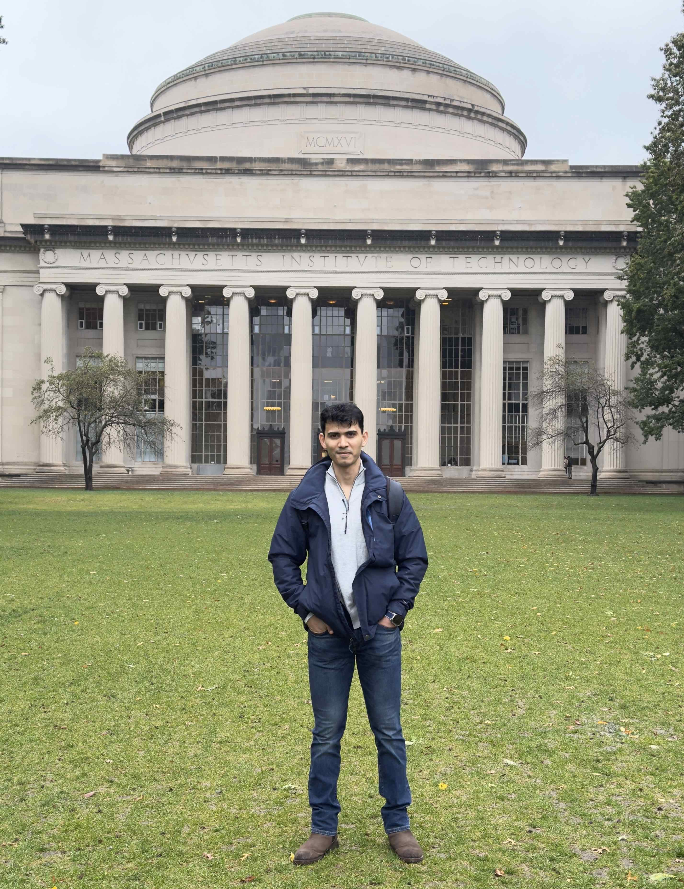

University of Illinois Urbana-Champaign
MS in Business Analytics
Research & data science
Exploring AI, human behavior, and data-driven research
Machine Learning · Data Science · Database Systems · Open-Source Software
I am a data scientist with experience in academic research, machine learning, and large-scale data analysis. I hold an MS in Business Analytics from the University of Illinois Urbana-Champaign, where I am currently a Research Fellow at Data Science Research Services, UIUC working on research across Machine Learning, Statistics, Data Science, Optimization, Econometrics and the Computational Social Sciences.
My research interests center on how computational methods and AI systems can help us understand human decisions and economic activity. I am currently conducting a research connecting retail consumption data with satellite nighttime-light measurements. I also develop open-source research software, including Python libraries for large-scale retail data processing and financial document analysis.

Investigating whether patterns in staples, essential goods, and settlement-related consumption can complement nighttime-light measurements as indicators of persistent local economic activity. The retail-data analysis is underway; integration with satellite measures is a next phase.
Read about the research →Supported academic projects involving financial-statement sentiment analysis, document intelligence, longitudinal education data, and socioeconomic datasets.
See research experience →An open-source Python library for efficient reading and processing of large-scale NielsenIQ retail scanner datasets, developed from practical research data challenges.
View package on PyPI ↗Co-developed a Python library for preparing SEC 10-K filings for research, including HTML cleaning, noisy-text removal, and financial-table extraction. Co-authored with Xinyao Qian at UIUC Data Science Research Services.
View package on PyPI ↗MS in Business Analytics
BE in Electrical Engineering
Johnson Controls
Data Science Research Services · University of Illinois Urbana-Champaign